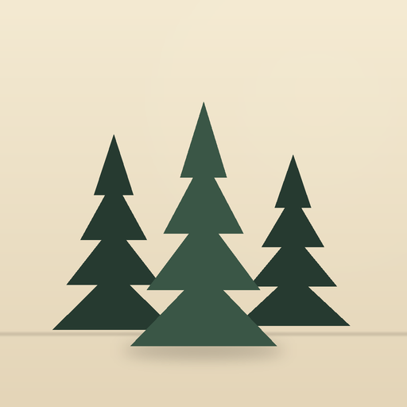
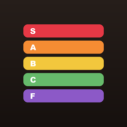
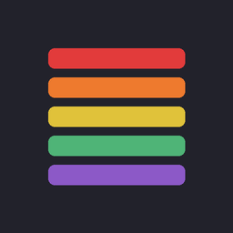
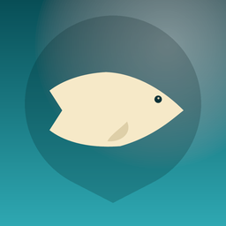
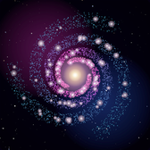
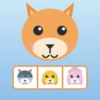

Around The Woodlands
Field guides for life around The Woodlands & the surrounding area.

S-Tier Eats
Rank every restaurant S, A, B, C or F instead of squinting at a 4.2-star blur. Build your own tier list, then see how it stacks up against the community board and the local Foodie Pros. Plan a Night Out picks tonight's spot from your filters, Near Me shows the best-ranked places around you, and friends can compare tastes. 4,700+ restaurants across 14 areas.
Download on the App Store
S-Tier Eats for Android
The same honest tier list as a native Android app. Rank every restaurant S through F, browse 4,700+ spots on a clustered map, and check the community's Everyone and Foodie Pros boards. Plan a Night Out picks tonight's dinner, Top-rated Near Me finds the best-ranked places around you, and each restaurant has one-tap Directions, Call, Order and Reserve where they apply.
Get it on Google Play
The Woodlands Fishing Guide
A hand-curated map of 81 fishing spots in and around The Woodlands, vetted by a local angler: lakes, ponds, boat ramps, creek bends and TPWD Community Fishing Lakes. Four pin colors show public versus private access at a glance, every spot lists the species to expect, and a weather card gives temperature, wind, pressure, sunrise and sunset. No account needed.
Download on the App StoreWoodlands Trail Guide
Turn-by-turn navigation for the 200+ miles of pathway and natural trail across The Woodlands. Tell it how far or how long and it builds a loop or an out-and-back, paved or natural, from wherever you are. 3,400+ mapped points of interest like restrooms, water fountains and playgrounds, plus elevation profiles, live weather and curated walks.
Download on the App StoreAlso by the developer

Cosmica: Idle Universe
Idle galaxy that plays itself, with automation and a Cosmic Tree.

Pupdoku
Find the hidden puppies in a cozy logic puzzle, 5×5 up to 9×9.